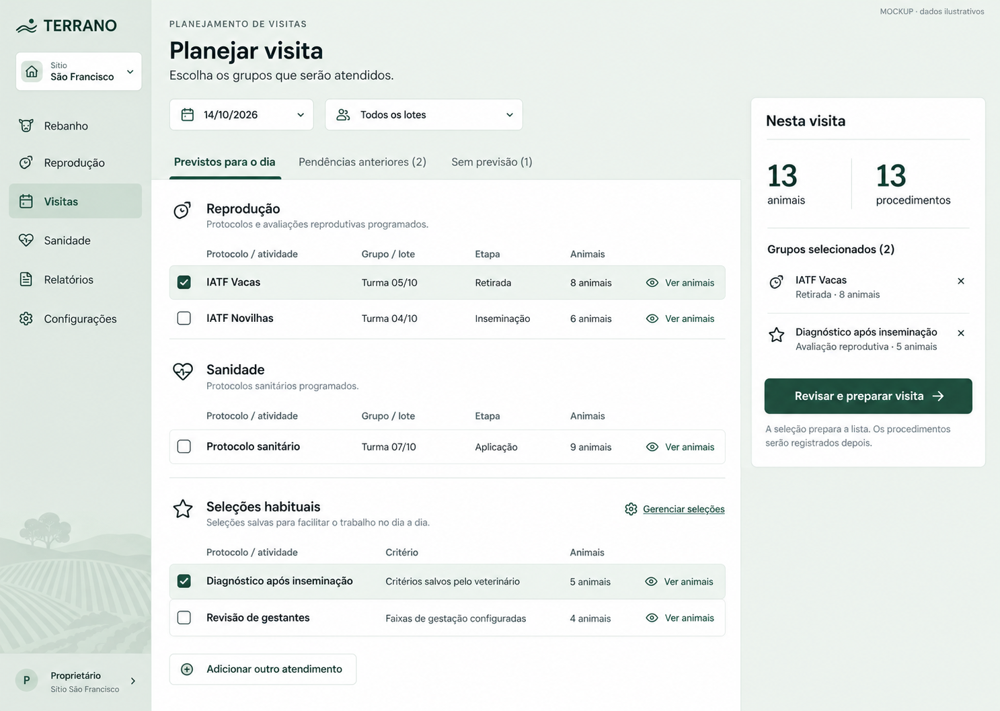
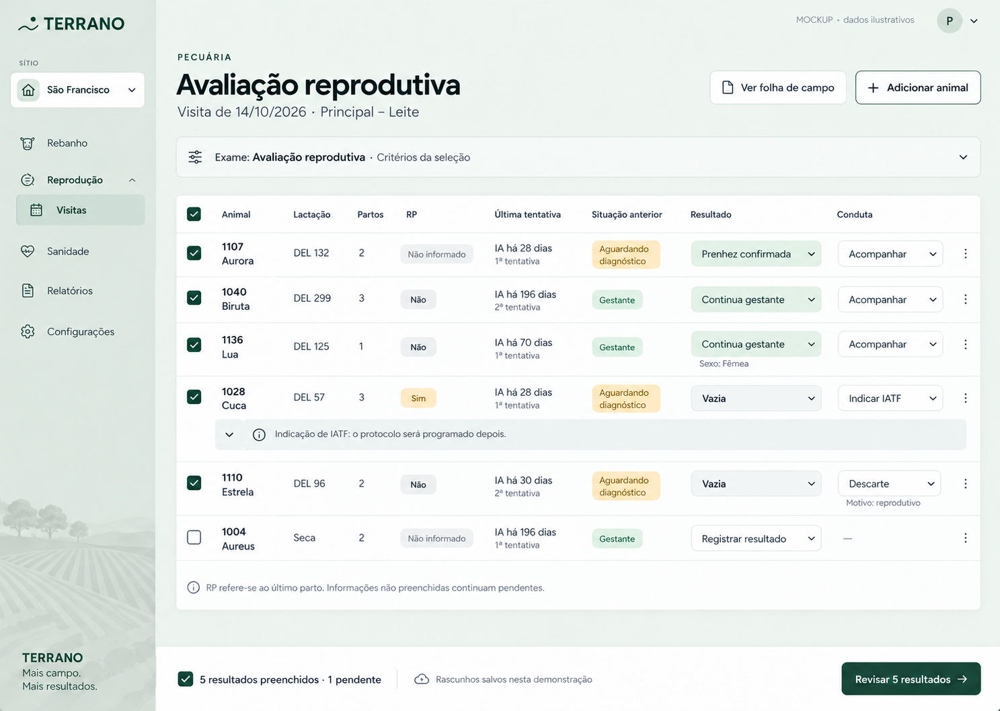
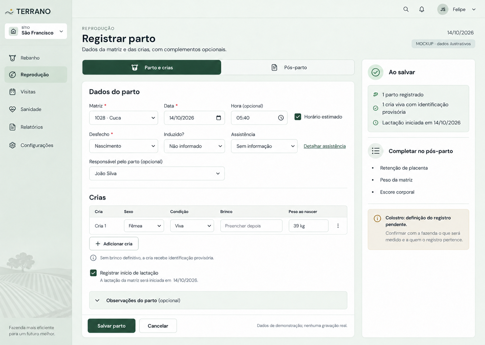
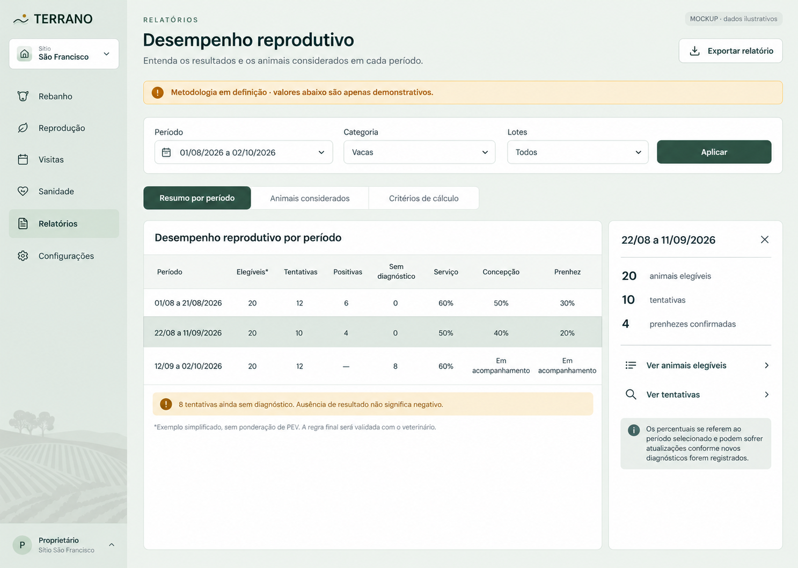

1. Planejar a visita
Selecionar grupos de protocolos e seleções habituais, conferir animais e preparar a visita. Pendências anteriores e previsões indefinidas ficam separadas.
Abrir imagem em tamanho completo
2. Avaliação coletiva
Comparar contexto e registrar resultados em linhas compactas. DEL, situação produtiva, partos, RP e última tentativa ficam ao lado do resultado. Detalhes aparecem conforme a necessidade; indicação de IATF não inicia protocolo.
Abrir imagem em tamanho completo
3. Parto e pós-parto
Registrar matriz e crias em uma rotina própria. Os complementos ficam na área de pós-parto, acessível pela aba ilustrada. A imagem mostra somente a aba Parto e crias. Colostro ainda depende da definição funcional; responsável permanece opcional.
Abrir imagem em tamanho completo
4. Indicadores reprodutivos
Conferir períodos e consultar quais animais e tentativas compõem os números. Valores são ilustrativos, sem ponderação de PEV; a metodologia final continua pendente. Não representam a fazenda nem equivalência validada com o IILB.
Abrir imagem em tamanho completo
Referências e limites dos mockups
Imagens produzidas com a ferramenta nativa de geração de imagens. Brief: aplicativo desktop em português, com referência visual na interface atual Terrano (sálvia e verde floresta), seleção coletiva de grupos, contexto reprodutivo legível e rotinas de parto e indicadores separadas. Os relatórios fornecidos serviram como referência funcional.
Revisões visuais: RP “Sim” em âmbar, RP “Não” neutro; resultado “Vazia” não aparece como erro; responsável pelo parto opcional e distinto do autor do lançamento. DEL e datas são exemplos. A mesma identificação em telas diferentes não representa uma linha do tempo real.
São quatro recortes das rotinas principais, sem cobrir todas as telas de configuração, detalhes, relatórios impressos ou estados de erro. Colostro e metodologia dos indicadores permanecem em definição. Nenhum dado do banco foi consultado ou alterado para produzir estes exemplos.